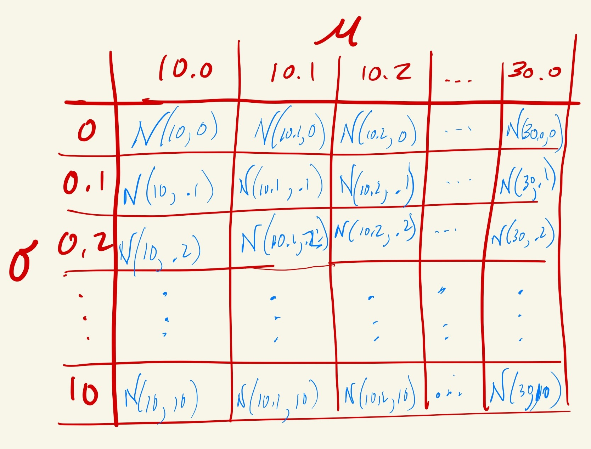

# Load libraries
library(broom)
library(gt)
library(tidyverse)7 Likelihood: A Framework for Estimation
In this set of notes, you will learn about the method of maximum likelihood to estimate model parameters.
7.1 Likelihood
Remember that likelihood is the probability of a particular set of parameters GIVEN (1) the data, and (2) the data are from a particular distribution (e.g., normal). Symbolically,
\[ \mathrm{Likelihood} = P(\mathrm{Parameters} \mid \mathrm{Distribution~and~Data}) \]
Also recall, that to compute the likelihood we compute the joint probability density of the data under that particular set of parameters. For example, to compute \(\mathcal{L}(\mu = 20, \sigma = 4 \mid x = \{30, 20, 24, 27\}; \mathcal{N})\), we use the following syntax:
# Compute likelihood mu=20, sigma=4
prod(dnorm(x = c(30, 20, 24, 27), mean = 20, sd = 4))[1] 5.702554e-077.2 Likelihood as a Framework for Estimation
Likelihood can be used as the basis for estimating parameters given a model and data. The idea is that the “best” estimates for the parameters are those that produce the highest likelihood given the data and model. Consider this example: Which set of parameters,\(\mathcal{N}(20,4)\) or \(\mathcal{N}(25,4)\), was more likely to generate the data \(x = \{30, 20, 24, 27\}\)? To answer this, we compute the likelihood for both candidate sets of parameters.
# Compute likelihood mu=20, sigma=4
prod(dnorm(x = c(30, 20, 24, 27), mean = 20, sd = 4))[1] 5.702554e-07# Compute likelihood mu=25, sigma=4
prod(dnorm(x = c(30, 20, 24, 27), mean = 25, sd = 4))[1] 1.774012e-05Since the second set of parameters produced a higher likelihood, it is more probable that the data were generated from the \(\mathcal{N}(25,4)\) distribution than from the \(\mathcal{N}(20,4)\) distribution. (Using the likelihood ratio, we can also say how much more likely the data were to be generated from this distribution.)
So now we come to the crux of Maximum Likelihood Estimation (MLE). The goal of MLE is to find a set of parameters that MAXIMIZES the likelihood given the data and a distribution. For example, given the observed data \(x = \{30, 20, 24, 27\}\) were generated from a normal distribution, what are the values for the parameters of this distribution (mean and standard deviation) that produce the HIGHEST (or maximum) value of the likelihood?
Whichever parameters produce the highest likelihood end up being the parameter estimates. We will illustrate this a couple examples.
7.3 Example 1: Using MLE to Estimate the Mean
For our first example, we will keep it simple by only trying to estimate a single parameter value using MLE. For this example, we will try to estimate the mean value for the four data values, \(x=\{30,20,24,27\}\). To do this we will assume that the data were generated from a normal distribution and that the standard deviation in this normal distribution was \(\sigma=4.272\).
What we need to do, is compute the likelihood for several different \(\mu\) values, and determine which produces the highest likelihood value. Here we try five different values for \(\mu\).
# Compute L(mu = 10)
prod(dnorm(c(30, 20, 24, 27), mean = 10, sd = 4.272))[1] 1.449116e-16# Compute L(mu = 15)
prod(dnorm(c(30, 20, 24, 27), mean = 15, sd = 4.272))[1] 1.695637e-10# Compute L(mu = 20)
prod(dnorm(c(30, 20, 24, 27), mean = 20, sd = 4.272))[1] 8.27684e-07# Compute L(mu = 25)
prod(dnorm(c(30, 20, 24, 27), mean = 25, sd = 4.272))[1] 1.685382e-05# Compute L(mu = 30)
prod(dnorm(c(30, 20, 24, 27), mean = 30, sd = 4.272))[1] 1.431642e-06Based on this it looks like a \(\mu\approx25\) produces the highest likelihood. We can also plot the likelihood versus the candidate parameter values.
Code
# Create data
example_01 = data.frame(
mu = c(10, 15, 20, 25, 30)
) |>
rowwise() |>
mutate(
L = prod(dnorm(c(30, 20, 24, 27), mean = mu, sd = 4.272))
)
# Plot
ggplot(data = example_01, aes(x = mu, y = L)) +
geom_line(color = "darkgrey", size = 0.5) +
geom_point() +
xlab(expression(mu)) +
ylab("Likelihood") +
theme_light()Warning: Using `size` aesthetic for lines was deprecated in ggplot2 3.4.0.
ℹ Please use `linewidth` instead.We could then continue to try values around 30 to hone in on the \(\mu\) value that produces the highest likelihood (e.g., \(\mu=\{24.7, 24.8, 24.9, 25.1, 25.2, 25.3\}\)). This methodology essentially boils down to continuing to narrow the search space by determining the likelihood value for more and more precisely defined values of the parameter.
We could also carry out this search computationally. Here for example, I set up a data frame that includes candidates for \(\mu\). This search space is looks at all values of \(\mu\) between 10.00 and 30.00. This is called the search space. (Given our search space, we will be able to determine \(\mu\) to within the nearest hundredth.) We are then going to compute the likelihood based on each of those values. We use rowwise() so that the likelihood (in the mutate() layer) is carried out correctly; using the \(\mu\) value in each row. Because rowwise() At the end of the chain, we use ungroup() to return the results to an ungrouped data frame.
# Set up parameter search space
# Compute likelihood
example_01_grid = data.frame(
mu = seq(from = 10, to = 30, by = 0.01)
) |>
rowwise() |>
mutate(
L = prod(dnorm(c(30, 20, 24, 27), mean = mu, sd = 4.272))
) |>
ungroup()
# View results
head(example_01_grid)We can then plot the likelihood versus the parameter values for these 2,001 parameter candidates. Typically, when there are many values, we do this using a line plot. This is what is referred to as a profile plot.
# Plot the likelihood versus the parameter values
ggplot(data = example_01_grid, aes(x = mu, y = L)) +
geom_line() +
xlab(expression(mu)) +
ylab("Likelihood") +
theme_light()Using the profile plot, we can see that the \(\mu\) value that produces the largest value for the likelihood is a bit higher than 25. We can find the exact value in our search space by arranging the rows in our search data frame by their likelihood values, and then using the slice_max() function to find the row with the highest likelihood value. The n=1 argument finds the maximum row. If you wanted the highest two rows, we would use n=2
# Find mu with maximum likelihood
example_01_grid |>
slice_max(L, n = 1)In the candidate values for \(\mu\) that we included in the search space, \(\mu=25.25\) produces the highest likelihood. Thus, given the data and that the data were generated from a normal distribution with \(\sigma=4.272\), the most probable value for \(\mu\) is 25.25. This is our maximum likelihood estimate for the mean!
You can get more precision in the estimate by changing the by= argument in the seq() function when you are initially setting up your search space. For example if you need the estimate to the nearest 1000th, set by=.001.
7.4 Example 2: Using MLE to Estimate the Mean and Standard Deviation
In the previous example, we assumed that we knew the value for \(\sigma\). In practice, this often needs to be estimates along with \(\mu\). To do this, you need to set up a search space that includes different combinations of \(\mu\) and \(\sigma\). Here we search \(\mu = \{10.0, 10.1, 10.2,\ldots, 30.0\}\) and \(\sigma=\{0.0, 0.1, 0.2,\ldots,10.0\}\) values from 0.1 to 10.0. (Remember, that \(\sigma\geq0\)).
The crossing() function creates every combination of \(\mu\) and \(\sigma\) that we define in our search space. So, for example, [\(\mu=10.0; \sigma=0.0\)], ]\(\mu=10.0; \sigma=0.1\)], [\(\mu=10.0; \sigma=0.2\)], etc. Since we have included 201 \(\mu\) values and 101 \(\sigma\) values, the search space is \(201 \times 101 = 20,301\) parameter combinations.
# Set up search space
# Compute the likelihood
example_02 = crossing(
mu = seq(from = 10, to = 30, by = 0.1),
sigma = seq(from = 0, to = 10, by = 0.1)
) |>
rowwise() |>
mutate(
L = prod(dnorm(c(30, 20, 24, 27), mean = mu, sd = sigma))
) |>
ungroup()
# Find row with highest likelihood
example_02 |>
slice_max(L, n = 1)The parameters that maximize the likelihood (in our search space) are a mean of 25.2 and a standard deviation of 3.7. Again, if you need to be more precise in these estimates, you can increase the precision in the by= argument of the seq() functions.
In computer science, this method for finding the MLE is referred to as a grid search. This is because the combinations of parameter values in the search space constitute a grid. In the figure below, the search space for each parameter is listed in the first row/column of the table. Every other cell of the table (the “grid”) constitutes a particular combination of the parameters. We are then computing the likelihood for each combination of parameters and searching for the cell with the highest likelihood.

When we have two (or more) parameters we need to estimate the time taken to carry out a grid search is increased in a non-linear way. For example, combining 100 values of each parameter does not result in a search space of 200, but a search space of 10,000. So increasing the precision of both parameters to by=.01 increases each the number of candidates from \(20,301\) to \(2001 \times 1001 = 2,003,001\). This increase the computational time it takes to solve the problem.
If you are relying on grid search, it is often better to operate with less precision initially, and then identify smaller parts of the grid that can be searched with more precision.
7.4.1 Likelihood Profile for Multiple Parameters
We could also plot the profile of the likelihood for our search space, but this time there would be three dimensions: one dimension for \(\mu\) (x-axis), one dimension for \(\sigma\) (y-axis), and one dimension for the likelihood (z-axis). When we plot the likelihood profile across both \(\mu\) and \(\sigma\), the profile looks like an asymmetrical mountain. The highest likelihood value is at the summit of the mountain and corresponds to \(\mu=25.2\) and \(\sigma=3.7\).
Code
# Load library
library(plot3D)
scatter3D(x = example_02$mu, y = example_02$sigma, z = example_02$L,
pch = 18, cex = 2, theta = 45, phi = 20, ticktype = "detailed",
xlab = expression(mu), ylab = expression(sigma), zlab = "Likelihood",
colkey = FALSE,
colvar = example_02$L,
col = ramp.col(col = c("#f6eff7", "#bdc9e1", "#67a9cf", "#1c9099", "#016c59"), n = 100, alpha = 1)
)If we extend our estimation to three or more parameters, we can still use the computational search to find the maximum likelihood estimates (MLEs), but it would be difficult to plot (there would be four or more dimensions). In general, the profile plots are more useful as a pedagogical tool rather than as a way of actually finding the MLEs.
7.5 Log-Likelihood
The likelihood values are quite small since we are multiplying several probability densities together. To alleviate this issue, it is typical to compute the natural logarithm of the likelihood and operate on it, rather than on the likelihood itself. For example, in our first example, we would compute the log-likelihood1 and then determine the \(\mu\) value that has the highest log-likelihood value.
# Set up parameter search space
# Compute likelihood and
example_01 = data.frame(
mu = seq(from = 10, to = 30, by = 0.01)
) |>
rowwise() |>
mutate(
L = prod(dnorm(c(30, 20, 24, 27), mean = mu, sd = 4.272)),
ln_L = log(L)
) |>
ungroup()
# Find mu with maximum log-likelihood
example_01 |>
slice_max(ln_L, n = 1)The profile of the log-likelihood looks a little different than that of the likelihood. What is important here is that the \(\mu\) value that produces the highest value for the log-likelihood, is the same \(\mu\) value that produces the highest likelihood.
# Plot the log-likelihood versus the parameter values
ggplot(data = example_01, aes(x = mu, y = ln_L)) +
geom_line() +
xlab(expression(mu)) +
ylab("Log-likelihood") +
theme_light()Maximizing the log-likelihood gives the same parameter values as maximizing the likelihood. Remember that , so maximizing the log-likelihood is the same as maximizing the likelihood2.
7.6 Example 3: Using MLE to Estimate Regression Parameters
In estimating parameters for a regression model, we want to maximize the likelihood (or log-likelihood) for a given set of residuals that come from a normal distribution. We use the residuals since that is what we make distributional assumptions about in the model (e.g., normality, homogeneity of variance, independence). Our goal in regression is to estimate a set of parameters (\(\beta_0\), \(\beta_1\)) that maximize the likelihood of the residuals.
To understand this, consider the following a toy example of \(n=10\) observations.
Code
# create toy data
example_03 = data.frame(
x = c(4, 0, 3, 4, 7, 0, 0, 3, 0, 2),
y = c(53, 56, 37, 55, 50, 36, 22, 75, 37, 42)
)
# Create table
example_03 |>
gt() |>
cols_align(
columns = c(x, y),
align = "center"
) |>
cols_label(
x = md("*x*"),
y = md("*y*")
) |>
tab_options(
table.width = pct(30)
)| x | y |
|---|---|
| 4 | 53 |
| 0 | 56 |
| 3 | 37 |
| 4 | 55 |
| 7 | 50 |
| 0 | 36 |
| 0 | 22 |
| 3 | 75 |
| 0 | 37 |
| 2 | 42 |
We initially enter these observations into two vectors, x and y.
# Enter data into vectors
x = c(4, 0, 3, 4, 7, 0, 0, 3, 0, 2)
y = c(53, 56, 37, 55, 50, 36, 22, 75, 37, 42)Next, we will write a function to compute the log-likelihood of the residuals given a set of coefficient estimates. The bones for how we will create such a function is show below.
ll = function(b_0, b_1){
*Compute and output the log-likelihood*
}We use the function() function to write new functions. In our example, this function will be called ll. The arguments to the function() function are the inputs that a user of the function needs to input. Here we are asking users to input the two regression coefficients for a simple linear regression, namely \(\hat{\beta}_0\) (b_0) and \(\hat{\beta}_1\) (b_1).
All the computation that the function is going to execute is placed in-between the curly braces. For us this means we need to:
- Compute the residuals based on the inputs to the function;
- Compute the log-likelihood based on the residuals; and
- Output the log-likelihood value.
To compute the residuals, we need to compute the fitted values, and subtract those from the outcome values. This means that we need x and y defined inside our function3.
Once we have the residuals, we compute the log-likelihood by incorporating the assumptions of the regression model. Since we assume the residuals are normally distributed, we compute the log-likelihood using the dnorm() function. The regression assumptions also specify that the mean residual value is 0; which implies that we should use the argument mean=0 in the dnorm() function.
The assumption about the standard deviation is that the conditional distributions all have the same SD, but it doesn’t specify what that value is. However, the SD of the errors seems like a reasonable value, so we will use that.
Finally, we can output values from a function using the return() function. Below, we will write a function called ll() that takes two arguments as input, b0= and b1=, and outputs the log-likelihood.
# Function to compute the log-likelihood
ll = function(b_0, b_1){
# Use the following x and y values
x = c(4, 0, 3, 4, 7, 0, 0, 3, 0, 2)
y = c(53, 56, 37, 55, 50, 36, 22, 75, 37, 42)
# Compute the yhat and residuals based on the two input values
yhats = b_0 + b_1*x
errors = y - yhats
# Compute the sd of the residuals
sigma = sd(errors)
# Compute the log-likelihood
log_lik = sum(dnorm(errors, mean = 0, sd = sigma, log = TRUE))
# Output the log-likelihood
return(log_lik)
}Now we read in our function by highlighting the whole thing and running it. Once it has been read in, we can use it just like any other function. For example to find the log-likelihood for the parameters \(\beta_0=10\) and \(\beta_1=3\) we use:
# Compute log-likelihood for b_0=10 and b_1=3
ll(b_0 = 10, b_1 = 3)[1] -64.29224We can also use our function to compute the log-likelihood in a grid search. Remember, our goal is to estimate the regression coefficients, so we are searching across values of \(\beta_0\) and \(\beta_1\).
# Create data set of search values and log-likelihoods
example_03 = crossing(
B0 = seq(from = 30, to = 50, by = 0.1),
B1 = seq(from = -5, to = 5, by = 0.1)
) |>
rowwise() |>
mutate(
ln_L = ll(b_0 = B0, b_1 = B1)
) |>
ungroup()
# Find parameters that produce highest log-likelihood
example_03 |>
slice_max(ln_L, n = 1)Here the parameter values that maximize the likelihood are \(\beta_0 = 40.1\) and \(\beta_1=2.7\). We can also compute what the standard deviation for the residual distributions was using the estimated parameter values. Remember, this value is an estimate of the RMSE.
# Compute residuals using MLE estimate
errors = y - 40.1 - 2.7*x
# Compute estimate of RMSE
sd(errors)[1] 13.18665Here the maximum likelihood estimates for our three parameters are: \(\hat{\beta}_0=40.1\), \(\hat{\beta}_1=2.7\), and \(\hat{\sigma}_{\epsilon}=13.2\).
7.6.1 Complications with Grid Search
In practice, there are several issues with the grid search methods we have employed so far. The biggest is that you would not have any idea which values of \(\beta_0\) and \(\beta_1\) to limit the search space to. Essentially you would need to search an infinite number of values unless you could limit the search space in some way. For many common methods (e.g., linear regression) finding the ML estimates is mathematically pretty easy (if we know calculus; see the section Using Calculus to Determine the MLEs). For more complex methods (e.g., mixed-effect models) there is not a mathematical solution. Instead, mathematics is used to help limit the search space and then a grid search is used to hone in on the estimates.
Although not a complication, we made an assumption about the value of the residual standard error, that it was equivalent to sigma(errors). In practice, this value would also need to be estimated, along with the coefficients.
7.7 Estimating Regression Parameter: OLS vs. ML Estimation
To compute ML estimates of the coefficients we will use the mle2() function from the {bbmle} package. To use the mle2() function, we need to provide a user-written function that returns the negative log-likelihood given a set of parameter inputs. Below we adapt the function we wrote earlier to return the negative log-likelihood. Since we are also interested in estimating the residual standard error (RSE), we also include this as an input into the function and use that inputted value in the dnorm() function.
# Function to output the negative log-likelihood
neg_ll = function(b_0, b_1, rse){
# Use the following x and y values
x = c(4, 0, 3, 4, 7, 0, 0, 3, 0, 2)
y = c(53, 56, 37, 55, 50, 36, 22, 75, 37, 42)
# Compute the yhat and residuals based on the two input values
yhats = b_0 + b_1*x
errors = y - yhats
# Compute the negative log-likelihood
neg_log_lik = -sum(dnorm(errors, mean = 0, sd = rse, log = TRUE))
# Output the log-likelihood
return(neg_log_lik)
}Now we can use the mle2() function to estimate the three parameters. This function requires the argument, minuslogl=, which takes the user written function returning the negative log-likelihood. It also requires a list of starting values (initial guesses) for the input parameters in the user-written function.
# Load library
library(bbmle)Loading required package: stats4
Attaching package: 'bbmle'The following object is masked from 'package:dplyr':
slice# Fit model using ML
mle.results = mle2(minuslogl = neg_ll, start = list(b_0 = 20.0, b_1 = 5.0, rse = 10))Warning in dnorm(errors, mean = 0, sd = rse, log = TRUE): NaNs produced# View results
summary(mle.results)Maximum likelihood estimation
Call:
mle2(minuslogl = neg_ll, start = list(b_0 = 20, b_1 = 5, rse = 10))
Coefficients:
Estimate Std. Error z value Pr(z)
b_0 40.0072 5.6721 7.0533 1.748e-12 ***
b_1 2.7361 1.7674 1.5481 0.1216
rse 12.5097 2.7973 4.4721 7.745e-06 ***
---
Signif. codes: 0 '***' 0.001 '**' 0.01 '*' 0.05 '.' 0.1 ' ' 1
-2 log L: 78.90883 We also obtain the OLS estimates:
# Create data
x = c(4, 0, 3, 4, 7, 0, 0, 3, 0, 2)
y = c(53, 56, 37, 55, 50, 36, 22, 75, 37, 42)
# Fit model with OLS
lm.1 = lm(y ~ 1 + x)
# Get estimates
glance(lm.1)tidy(lm.1)Both sets of parameter estimates are presented in Table 7.2.
Code
# create toy data
estimates = data.frame(
Estimate = c("$$\\hat{\\beta}_0$$", "$$\\hat{\\beta}_1$$", "$$\\hat{\\sigma}^2_{\\epsilon}$$"),
ML = c(40.01, 2.74, 12.51),
OLS = c(40.01, 2.74, 13.99)
)
# Create table
estimates |>
gt() |>
cols_align(
columns = c(Estimate, ML, OLS),
align = "center"
) |>
tab_options(
table.width = pct(40)
)| Estimate | ML | OLS |
|---|---|---|
| $$\hat{\beta}_0$$ | 40.01 | 40.01 |
| $$\hat{\beta}_1$$ | 2.74 | 2.74 |
| $$\hat{\sigma}^2_{\epsilon}$$ | 12.51 | 13.99 |
Comparing the coefficient estimates (\(\hat\beta_0\) and \(\hat\beta_1\)) to those obtained through ordinary least squares, we find they are quite similar. The estimate of the residual standard error (\(\sigma_{\epsilon}\)), however, differs between the two estimation methods (although they are somewhat close in value).
7.7.1 Estimating the Residual Variation: Maximum Likelihood vs. Ordinary Least Squares
The estimates of the residual standard error differ because the two estimation methods use different criteria to optimize over; OLS estimation finds the estimates that minimize the sum of squared errors, and ML finds the estimates that maximize the likelihood. Because of the differences, it is important to report how the model was estimated in any publication.
Both estimation methods have been well studied, and the resulting residual standard error from these estimation methods can be computed directly once we have the coefficient estimates (which are the same for both methods). Namely, the residual standard error resulting from OLS estimation is:
\[ \hat\sigma_{\epsilon}= \sqrt{\frac{\left(Y_i - \hat{Y}_i\right)^2}{n-p-1}} \]
where p is the number of predictors in the model. And the residual standard error resulting from ML estimation is:
\[ \hat\sigma_{\epsilon}=\sqrt{\frac{\left(Y_i - \hat{Y}_i\right)^2}{n}}, \]
The smaller denominator from the OLS estimate produces a higher overall estimate of the residual variation (more uncertainty). When n is large, the differences between the OLS and ML estimates of the residual standard error are minimal and can safely be ignored. When n is small, however, these differences can impact statistical results. For example, since the residual standard error is used to compute the standard error estimates for the coefficients, the choice of ML or OLS will have an effect on the size of the t- and p-values for the coefficients. (In practice, it is rare to see the different estimation methods producing substantively different findings, especially when fitting general linear models.)
Lastly, we note that the value of log-likelihood is the same for both the ML and OLS estimated models. The result from the ML output was:
\[ \begin{split} -2 \ln(\mathrm{Likelihood}) &= 78.91 \\[1ex] \ln(\mathrm{Likelihood}) &= -39.45 \end{split} \]
The log-likelihood for the OLS estimated model is:
# Log-likelihood for OLS model
logLik(lm(y ~ 1 + x))'log Lik.' -39.45442 (df=3)This is a very useful result. It allows us to use lm() to estimate the coefficients from a model and then use its log-likelihood value in the same way as if we had fitted the model using ML. This will be helpful when we compute measure such as information criteria later in the course.
In many applications of estimation, it is useful to use a criterion which is modified variant of the likelihood. This variant omits “nuisance parameters” (parameters which are not of direct interest and subsequently not needed in the estimation method) from the computation of the likelihood. This restricted version of the likelihood is then maximized and the estimation method using this modified likelihood is called Restricted Maximum Likelihood (REML).
When REML is used to estimate parameters, the residual standard error turns out to be the same as that computed in the OLS estimation. As such, sometimes this estimate is referred to as the REML estimate of the residual standard error.
7.7.2 Using Calculus to Determine the MLEs
A more convenient method to determine the ML estimates of the regression parameters is to use mathematics; specifically calculus. Remember, we can express the likelihood of the regression residuals mathematically as:
\[ \mathcal{L}(\beta_0, \beta_1 | \mathrm{data}) = p(\epsilon_1) \times p(\epsilon_2) \times \ldots \times p(\epsilon_n) \]
where the probability density of each residual (assuming normality) is:
\[ p(\epsilon_i) = \frac{1}{\sigma_{\epsilon}\sqrt{2\pi}}\exp\left[-\frac{(\epsilon_i-\mu)^2}{2\sigma^2_{\epsilon}}\right] \]
In addition to normality, which gives us the equation to compute the PDF for each residual, the regression assumptions also specify that each conditional error distribution has a mean of 0 and some variance (that is the same for all conditional error distributions). We can call it \(\sigma^2_{\epsilon}\). Substituting these values into the density function, we get,
\[ \begin{split} p(\epsilon_i) &= \frac{1}{\sigma_{\epsilon}\sqrt{2\pi}}\exp\left[-\frac{(\epsilon_i-0)^2}{2\sigma^2_{\epsilon}}\right] \\[1em] &= \frac{1}{\sigma_{\epsilon}\sqrt{2\pi}}\exp\left[-\frac{(\epsilon_i)^2}{2\sigma^2_{\epsilon}}\right] \end{split} \]
Now we substitute this expression for each of the \(p(\epsilon_i)\) values in the likelihood computation.
\[ \begin{split} \mathcal{L}(\beta_0, \beta_1 | \mathrm{data}) &= p(\epsilon_1) \times p(\epsilon_2) \times \ldots \times p(\epsilon_n) \\[1em] &= \frac{1}{\sigma_{\epsilon}\sqrt{2\pi}}\exp\left[-\frac{\epsilon_1 ^2}{2\sigma^2_{\epsilon}}\right] \times \frac{1}{\sigma_{\epsilon}\sqrt{2\pi}}\exp\left[-\frac{\epsilon_2^2}{2\sigma^2_{\epsilon}}\right] \times \ldots \times\\ &~~~~\frac{1}{\sigma_{\epsilon}\sqrt{2\pi}}\exp\left[-\frac{\epsilon_n^2}{2\sigma^2_{\epsilon}}\right] \end{split} \]
We can simplify this:
\[ \begin{split} \mathcal{L}(\beta_0, \beta_1 | \mathrm{data}) = &\left[ \frac{1}{\sigma_{\epsilon}\sqrt{2\pi}} \right]^n \times \exp\left[-\frac{\epsilon_1^2}{2\sigma^2_{\epsilon}}\right] \times \exp\left[-\frac{\epsilon_2^2}{2\sigma^2_{\epsilon}}\right] \times \ldots \times \\ &\exp\left[-\frac{\epsilon_n^2}{2\sigma^2_{\epsilon}}\right] \end{split} \]
Now we will take the natural logarithm of both sides of the expression:
\[ \begin{split} \ln \Bigl(\mathcal{L}(\beta_0, \beta_1 | \mathrm{data})\Bigr) = &\ln \Biggl( \left[ \frac{1}{\sigma_{\epsilon}\sqrt{2\pi}} \right]^n \times \exp\left[-\frac{\epsilon_1^2}{2\sigma^2_{\epsilon}}\right] \times \exp\left[-\frac{\epsilon_2^2}{2\sigma^2_{\epsilon}}\right] \times \ldots \times \\ &\exp\left[-\frac{\epsilon_n^2}{2\sigma^2_{\epsilon}}\right] \Biggr) \end{split} \]
Using our rules for logarithms and re-arranging the terms gives us,
\[ \mathcal{l}(\beta_0, \beta_1 | \mathrm{data}) = -\frac{n}{2} \times \ln (2\pi\sigma^2_{\epsilon}) - \frac{1}{2\sigma^2_{\epsilon}} \times \sum \epsilon_i^2 \]
Examining this equation, we see that the log-likelihood is a function of n, \(\sigma^2_{\epsilon}\) and the sum of squared residuals (SSR). The observed data define n (the sample size) and the other two components come from the residuals, which are a function of the parameters and the data.
Once we have this function, calculus can be used to find the analytic maximum. Typically before we do this, we replace \(\epsilon_i\) with \(Y_i - \hat\beta_0 - \hat\beta_1(X_i)\); writing the residuals as a function of the parameters (which we are solving for) and the data.
\[ \mathcal{l}(\beta_0, \beta_1 | \mathrm{data}) = -\frac{n}{2} \times \ln (2\pi\sigma^2_{\epsilon}) - \frac{1}{2\sigma^2_{\epsilon}} \times \sum \bigg(Y_i - \beta_0 - \beta_1(X_i)\bigg)^2 \]
In optimization, maximizing the log-likelihood is mathematically equivalent to minimizing the negative log-likelihood. (Note, this is what the mle2() function is doing.) That means we could also optimize over:
\[ -\mathcal{l}(\beta_0, \beta_1 | \mathrm{data}) = \frac{n}{2} \times \ln (2\pi\sigma^2_{\epsilon}) + \frac{1}{2\sigma^2_{\epsilon}} \times \sum \bigg(Y_i - \beta_0 - \beta_1(X_i)\bigg)^2 \]
This has the advantage that we are removing the negative signs on the right-hand side of the equation. To find the analytic minimum (or maximum), we compute the partial derivatives with respect to \(\hat\beta_0\), \(\hat\beta_1\), and \(\hat\sigma^2_{\epsilon}\), and set these equal to zero and solve for each of the three parameters, respectively. That is:
\[ \begin{split} \frac{\partial}{\partial \beta_0} \bigg[\frac{n}{2} \times \ln (2\pi\sigma^2_{\epsilon}) + \frac{1}{2\sigma^2_{\epsilon}} \times \sum \bigg(Y_i - \beta_0 - \beta_1(X_i)\bigg)^2\bigg] &= 0 \\[1em] \frac{\partial}{\partial \beta_1} \bigg[\frac{n}{2} \times \ln (2\pi\sigma^2_{\epsilon}) + \frac{1}{2\sigma^2_{\epsilon}} \times \sum \bigg(Y_i - \beta_0 - \beta_1(X_i)\bigg)^2\bigg] &= 0 \\[1em] \frac{\partial}{\partial \sigma^2_{\epsilon}} \bigg[\frac{n}{2} \times \ln (2\pi\sigma^2_{\epsilon}) + \frac{1}{2\sigma^2_{\epsilon}} \times \sum \bigg(Y_i - \beta_0 - \beta_1(X_i)\bigg)^2\bigg] &= 0 \end{split} \]
Within each partial derivative, the parameters that are not being partialled can be treated as constants, which often makes the derivative easier to solve. For example in the first two partial derivatives the residual variance can be treated as a mathematical constant. Since all constant terms can be removed from the derivative, this leads to an interesting result:
\[ \frac{\partial}{\partial \boldsymbol{\beta}} \bigg[ -\mathcal{l}(\beta_0, \beta_1 | \mathrm{data})\bigg] = \frac{\partial}{\partial \boldsymbol{\beta}} \bigg[ \sum \bigg(Y_i - \beta_0 - \beta_1(X_i)\bigg)^2 \bigg] \]
This means that minimizing the negative log-likelihood is equivalent to minimizing the sum of squared residuals! This implies that the coefficients we get for OLS and ML estimation are the same.
When we solve the third partial derivative for the residual standard error, we find that:
\[ \sigma^2_{\epsilon} = \frac{\sum \bigg(Y_i - \beta_0 - \beta_1(X_i)\bigg)^2}{n} \]
That is, the residual variance is equal to the sum of squared residuals divided by the sample size. In OLS estimation, the residual variance is the sum of squared residuals divided by the error degrees of freedom for the model. In the simple regression model the residual variance estimated using OLS would be:
\[ \sigma^2_{\epsilon} = \frac{\sum \bigg(Y_i - \beta_0 - \beta_1(X_i)\bigg)^2}{n-2} \]
This is why the residual standard errors were different when we used OLS and ML to carry out the estimation; the criteria we are optimizing over (sum of squared residuals vs. log-likelihood) impact the value of the residual variance estimate. Again, when n is large, the estimation method does not make a difference (i.e., \(n \approx n-2\)).
7.8 References
We could also compute the log-likelihood directly using
sum(dnorm(c(30, 20, 24, 27), mean = mu, sd = 4.272, log = TRUE)).↩︎This is because taking the logarithm of a set of numbers keeps the same ordination of values as the original values.↩︎
Alternatively,
xandycould be included as additional inputs into the function.↩︎